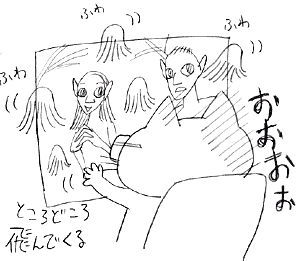
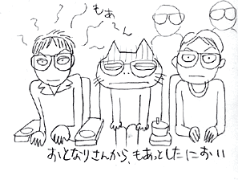

売店でがっくりあきらめてウーロン茶とフライドポテトを購入。
しかし、この持ち込みもできないシネコン制度もどうにかならないのかな。
というわけで、3Dメガネをかけて、ポテトをもぐもぐしてたら上映開始。ティムバートン×ジョニーデップのアリス・イン・ワンダーランドの予告から3D体験。そーかこーゆー感じなのねー。手前でひらっひらっと、ぽろんぽろんと、ごろんどすっと。
あー本編はアバターだった。
良くも悪くもジェームズキャメロン。カメラワークとかは気持ちいいけど、「えっ！なんでそうなる？」という人物描写で、途中笑えるシーンではないのに笑ってもーた。
そんでもって人や生き物がバサバサと死ぬのは苦手なので、後半の戦闘とかはかなり憂鬱。
マフラー抱えて怯えてしもたよ。
そんなわけで、私的解釈では「？」な感じ。スコーンとした娯楽大衆映画として割り切ってしまえばいいのだけどね。
でも思いの外3時間はあっさりと見ることができたのは脚本、演出のすばらしさ故なんだろうなーと。
それに、3D映画とゆーのは新たなステージ。表現を生かしたすごーいなーと思うシーンも多々。
売店でがっくりあきらめてウーロン茶とフライドポテトを購入。
しかし、この持ち込みもできないシネコン制度もどうにかならないのかな。
というわけで、3Dメガネをかけて、ポテトをもぐもぐしてたら上映開始。ティムバートン×ジョニーデップのアリス・イン・ワンダーランドの予告から3D体験。そーかこーゆー感じなのねー。手前でひらっひらっと、ぽろんぽろんと、ごろんどすっと。
あー本編はアバターだった。
良くも悪くもジェームズキャメロン。カメラワークとかは気持ちいいけど、「えっ！なんでそうなる？」という人物描写で、途中笑えるシーンではないのに笑ってもーた。
そんでもって人や生き物がバサバサと死ぬのは苦手なので、後半の戦闘とかはかなり憂鬱。
マフラー抱えて怯えてしもたよ。
そんなわけで、私的解釈では「？」な感じ。スコーンとした娯楽大衆映画として割り切ってしまえばいいのだけどね。
でも思いの外3時間はあっさりと見ることができたのは脚本、演出のすばらしさ故なんだろうなーと。
それに、3D映画とゆーのは新たなステージ。表現を生かしたすごーいなーと思うシーンも多々。
{kind=link}

座席は最後列から3列目のやや端だったのだけど、映像にゴーストなどは出ず、意外と鮮明。 噂されてる頭痛は酔うような感覚は特になし。私の場合、集中して「立体に見る！」って意識しないとあっさり平面認識でダラーっとスクリーンを見てしまうことが逆にあったぐらい。 やっぱりもっとスクリーンが視界いっぱいになるような席のほうが良かったのかな？{kind=link}

とゆーかとにかく3Dも感情移入も集中力しだいなのかも。 と、話しは変わり、この映画が面白そう フィリップ、きみを愛してる！ 自由すぎるなー好みな映画だなーとおもったらフランス映画なのねー。 フィリップで思い出した。フィリップ・キャンデローロ。 大好きなスケータ！ 感動的で美しいストレートラインステップ！ ひさびさに見たら格好良すぎで泣けたー。